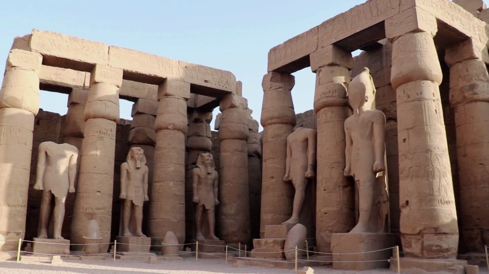

The city of Luxor was built on and around the ancient site of Thebes, once the wealthiest city in ancient Egypt. The modern city has its own spectacular temple, as well as a series of excellent museums.
Close to Luxor is the ancient site of Karnak, which was the most important place of worship for ancient Egyptians. Here you'll find a spectacular complex of sanctuaries, kiosks, pylons and obelisks, all dedicated to the Theban gods
Across the Nile from Luxor lie the royal burial grounds known as The Valley of the Kings and the Valley of the Queens. This is where you'll find the tomb of Tutankhamun.